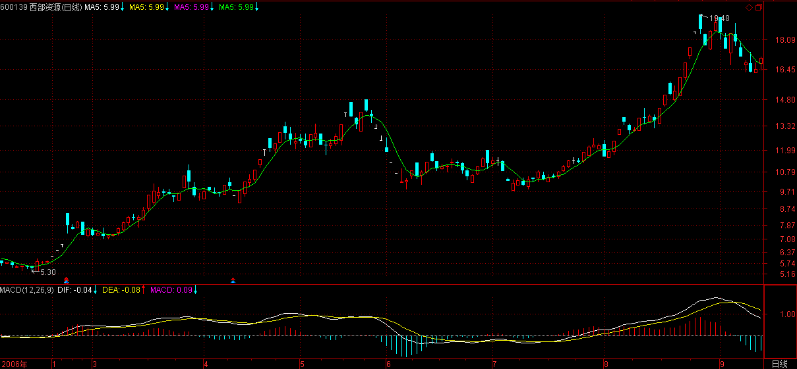
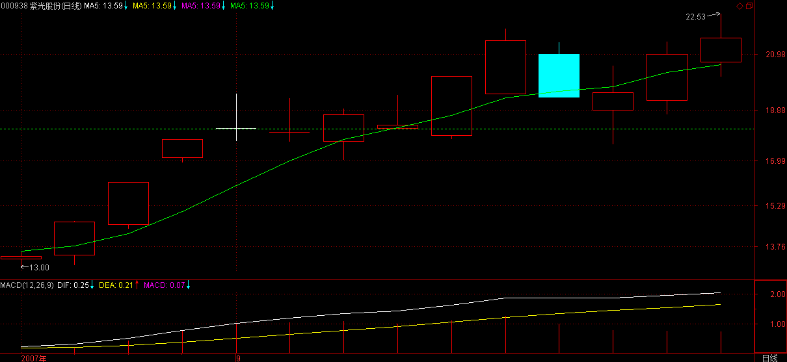
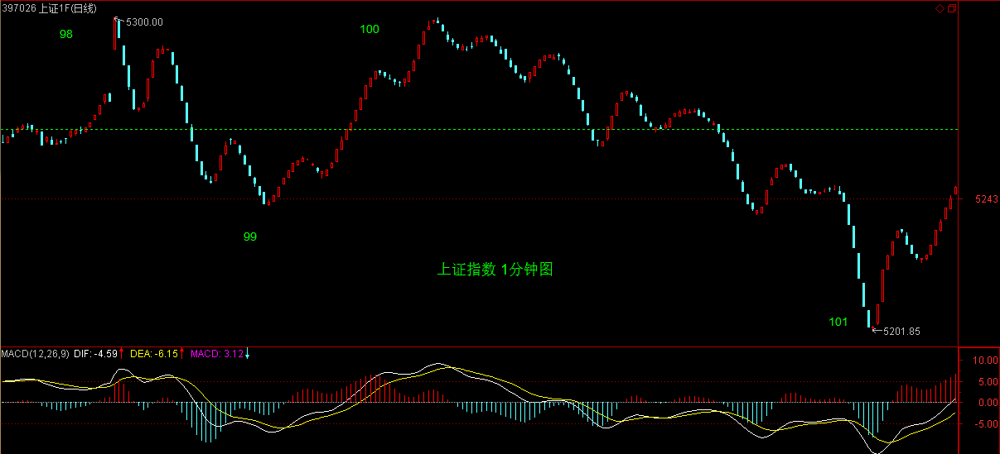
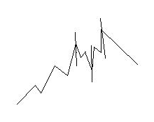

(2007-09-11 21:38:07)
今天本应该说点别的，但市场一跌，大多数人都没什么心情看别的，所以不妨再说一下股票。而股票又何曾就是股票？把股票只当成股票，那当然会被股票所缠。
股票从来就不是股票，而是你的贪嗔痴疑慢；没有任何的失败相关于股票，而只关于你的贪嗔痴疑慢，股票不过是一个幌子，一个道具。
在西方，真正在资本市场上有成就的，基本都成了哲学家。没有对市场的洞察，靠整天这消息、那题材地折腾，那永远只能在散户的区间中震荡。有此眼界，不一定能达此高度，毕竟眼高手低也是通病；但无此眼界，就一定不可能达此高度。
本ID有时候喜欢用一些刺激性的词语，为什么？就如棒喝，就是要刺痛你，激发你的贪嗔痴疑慢，这样才有醒的一天。所有希望来市场寻找温情、同情、眼泪的，都可以回家磨豆腐，这些玩意，市场里什么时候曾有过？
在市场里要成功，除了比市场还要强悍，别无他法。市场出现卖点，你还幻想着火星，那就回火星去吧，地球需要的是手起刀落的强悍。
这次，提供了一个绝佳的例子，那么，不妨看看所有没有强悍的究竟都犯了什么毛病？
注意，这不是批斗会，而是严肃的解剖，无论你现实中具体如何操作，都有解剖的必要。
市场，没有逻辑，本ID的理论给了市场以逻辑。【韶山映山红】缠论给了市场什么逻辑？★可以做个专题。以后研究。】
一、所有的顶点都必然是顶分型。
这是本ID理论的一个最简单的结论。
从这可以严格推导出什么？就是一旦出现顶分型，离开就是唯一的选择。【韶山映山红】这里说的顶分型，默认都是日线级别的。★】
至于顶分型后是否形成笔，那是离开后再判断的事情。
顶分型后，无非两种选择：
1、形成笔，也就是构成一个底分型与顶分型间有不共用的K线。
2、不形成笔，也就是构成的底分型与这顶分型之间只有共用的K线。
【韶山映山红】两种情况的区别在于有没有“共用的K线”。换句话说，和价格波动的区间范围不是严格的对应关系。】
但无论哪种选择，都有足够的空间让你的反应，如果是第一种，那调整是大的，第二种，调整是小的，【韶山映山红】这里说的大小是级别还是价格区间？一般人只关注价格区间。】这，在昨天，本ID专门写的课程里有很多例子反复说明了。为什么？因为本周，3600点以来第一次有绝大的可能出现周线上的顶分型，这可不是今天才说的。
那么，这么明确地知道了这一点，按照市场的逻辑，正如昨天的课程里反复强调的“注意，顶分型的时候是形成顶分型那天冲高卖，而不是收盘等顶分型都很明确了再走”，那么对于周K线，这一点是一样的。【韶山映山红】形成顶分型的那周冲高卖。也就是1分钟同级别分解的盘整背驰的卖点卖。】
而日线上，大盘在9月7日的顶分型已经明白无误。【韶山映山红】日线的顶分型有多次。追溯，可以查到顶分型的区间套，但是不能依此做当下的判断，所以分型的区间套没有意义。★】
【韶山映山红】下图是上图同样区间的1分钟走势图。线段级的同级别分解机械操作可以对应日线分型，1分钟走势的同级别分解机械操作可以对应周线分型。顶分型是盘整背驰的一卖，或者盘整不背驰然后不创新高的二卖。回补是盘整背驰的买点，不盘整背驰的小转大就会踏空。】
二、中枢震荡的卖点都是出现在向上离开中枢时
这也是本ID理论中最简单的结论了，那么，在最近形成的5分钟中枢中，任何向上离开5333点的震荡，最终都将形成卖点，【韶山映山红】任何震荡，也就是说，不一定是次级别的1分钟走势，可以是线段或者笔。】当然，该卖点后回抽如果回不到5333点，可能形成第三类买点，但这是卖点后的事情，没有任何可能比当下的卖点更重要。而且，股票的交易规则，没有规定卖了就不能再买。【韶山映山红】5333点就是78，5分钟中枢第一段的高点。】
现在，我们可以很客观地面对这样一个问题，就是，一个离开5333点的中枢震荡把指数带到了5395点，【韶山映山红】5395点就是88。“中枢震荡”是指线段级别离开5分钟中枢，不是次级别的1分钟级别。】
该震荡对应的线段出现明显的类背驰然后出现明显的破坏，

这时候，我们可以很理智地判断当下的形势：
1、周K线顶分型可能不成立，也就是可以突破5412点，和5395点相差的距离就17点。【韶山映山红】虽然形成了5395的次高点，但只是线段级别的，依然有可能震荡形成1分钟级别的向上离开创新高。】
2、周K线顶分型一旦成立，那么，即使不形成周线图上的笔，也将至少调整到出现一个底分型，至少去碰一次5周均线，而一旦出现笔，那调整的幅度就至少是对3600点以来的总调整，最强势的1/4，也要有450点，更不用说1/3、1/2的比例了。【韶山映山红】为什么是“总调整”？★】
3、短线中枢震荡已经出现卖点，【韶山映山红】线段离开形成次高点5395的二卖。】如果在这个位置卖，就算后面周的顶分型不成立，也有震荡的低点以及第三类买点可以重新介入。【韶山映山红】线段级震荡卖出，就线段级震荡的低点回补。如果踏空，5分钟中枢的三买点还可以赶下一班车。】
归纳上面三个最严格的判断，那么，该干什么还不是一目了然的事情？
本ID在昨天特别强调，这时候宁愿卖错，绝对不能买错。为什么要强调这，就是本ID知道，很多人，被自己的贪嗔痴疑慢所迷惑，宁愿用十几点去对赌几百点，用1%的可能去对赌99%的可能。如果1%可以换来100倍的收益，那当然没问题，但事实上根本不是这样，那么，为什么还要坚持？说白了，只有五个字：贪嗔痴疑慢。
对于散户来说，本质上没有卖错，只有买错。为什么？卖错又不会亏钱，买错就不同了。卖错了，有钱，这么多股票可以被面首，为什么要一棵树吊死？
而且实际上，只要你不被自己的贪嗔痴疑慢所左右，根本也不存在卖错的问题，很多人，在连日顶分型的雏形都没有的情况下就卖，为什么？不过是贪嗔痴疑慢，觉得高了、觉得恐慌了，觉得惊吓了。而到真正的顶分型出来了，反而要假设这顶分型是假的，调整一下就可以突破的，就不觉得高了，不觉得恐慌了，不觉得惊吓了，人的颠倒，往往如此。【韶山映山红】中继的价值就是改变锚定点的位置。】
来本ID这里，如果真是想洗心革面，就要首先掌握本ID的理论，然后用该理论去操作，在操作中把自己培养成钢铁战士，钢铁战士的最基本标准是什么：
一、买点总在恐慌的下跌中形成，但只要买点出现，就要义无返顾地买进。
二、上涨总在不同情绪的交织中进行，抵抗住各种情绪的干扰，用钢铁般的意志把股票持住，决不中途给抛下车。
三、卖点总在疯狂的上涨中形成，只要卖点出现，手起刀落，让股票见鬼去。
四、任何的操作失误，只是一次跌倒，跌倒就爬不起来的，绝对不可能是钢铁战士。失误就要总结，绝对不在同一错误上犯上两次。
五、买错比卖错严重，一旦确认买错了，一定要手起刀落，让股票见鬼去。如果市场给你一次改正错误的机会你没把握，也就是第二类买卖点，那就买豆腐回家；如果市场给你第二次改正错误的机会你没把握，也就是第三类买卖点，那就直接回家磨墙。【韶山映山红】这里说的“确认买错”是什么情况？之后还有二卖、三卖？是判断错误，还是走势没有按照预期的去演化？★可以做个专题。以后研究。】
六、市场只有你才能帮助你，被市场毁掉的是你，战胜市场的也是你，你比市场强悍，市场就是你的；否则，你就是市场的点心。
七、踏准市场的节奏，就可以在刀山火海中逍遥游。
本ID这里，人越少越好，草深三丈也无妨。如果不想成为钢铁战士，那就没必要来这里看任何有关股票的东西，其他东西可以看，别的地方可以去，何必来这里生气？
如果哪一天，你钢铁战士了，你也没必要觉得本ID教了你什么。本ID这里无授无得，本ID无一法给人，你只是你，你钢铁了，自然就战士了，和本ID无关。
但你没成为钢铁战士之前，最好还是有自知自明，本ID反复强调，如果你技术不行的，没有手起刀落的修为，就先把仓位减下来。那么，很多没减的，又没有手起刀落修为的，是不是又被贪嗔痴疑慢？
没到那水平，没到能在刀锋上舞蹈的水平，就别玩悬的，干自己能力范围内的事情。市场中最大的毛病之一，就是杀牛用鸡刀，屠龙用鸭刀，最后都被鸡了鸭了去了。
市场上不是每一笔钱都适合任何人去赚的，面对市场的机会，少点贪嗔痴疑慢，认清自己的能力，这比什么都重要。
市场是连续的，高位走了不是天堂，高位没走不是地狱。大跌，不过是下一买点后大反弹的前戏。这一切，都逃不过本ID的理论，而是否参与，则与你的操作级别相关，也和你的操作能力相关。
没有人天生就是胜利者，也没有人天生就与失败为伍。
人人是佛，无一人可度，无一人需救，人人有明珠一颗，照破山河大地，又何必憋屈了自己？
【韶山映山红】宋代柴陵郁和尚：“我有明珠一颗，久被尘劳关锁。今日尘尽光生，照破山河万朵。” 往参杨歧，歧一日忽问：“受业师为谁？”师曰：“柴陵郁和尚”，歧曰：“吾闻伊过桥遭颠有省，做偈甚奇，能记否？”师诵曰：“我有明珠一颗，久被尘劳关锁。今日尘尽光生，照破山河万朵。” 歧笑而趋起，师愕然，通夕不寐。黎明咨询之，适岁暮，歧曰：“汝见昨日打敲傩者么？”曰：“见。”歧曰：“汝一筹不及渠。”师复骇曰：“意旨如何？”歧曰：”渠爱人笑，汝怕人笑。”师大悟。《白云守端禅师语录》】
(2007-09-12 15:42:13)
今天的走势太技术，简单说，就是昨天说的，跌破5周线后必然有反弹，问题的关键是这个反弹能延续到什么位置，【韶山映山红】关键在于反弹的级别，是判断走势的基础。★】如果不能抽回5265点之上，那么后面的走势依然充满凶险。【韶山映山红】78的5265点是5分钟中枢的ZD。拉回就是5分钟中枢延伸，不拉回就会出三卖。】抽回ZD之上，在中枢上震荡，才会改变中枢下震荡的凶险。】
但如果了解了本ID理论的一些最简单结论，那今天的走势，简直就是一个现场教科书演示。你可以清楚地看到，走势是如何从线段扩张成一个1分钟中枢的，而其中利用背驰等关系，又是如何能在火海刀山中逍遥游的。【韶山映山红】92-93对90-91线段盘整背驰，反弹形成线段中枢。】
显示，第一个绿箭头的那一笔，没有发生笔破坏，那必然要回落去完成线段的走势，这是理论上100%保证的。【韶山映山红】没有笔破坏，也可以继续盘整向上，所以这里的“必然”另有原因。★绿箭头之前的下降笔没有盘整背驰，所以这个反弹是笔级别的意外，没有笔破坏也只是小转大没有完成而已。】
而92这一处，出现线段破坏，但该线段不能拉回85处，那么这就构成了85-88这1分钟中枢的第三类卖点，后面的继续下跌也是理论100%保证的。【韶山映山红】91没有线段级别盘背，只是笔级别盘背，所以反弹无力。91-92内部是中枢盘背，终结线段，所以还有一跌。85-88中枢是84开始的1分钟向下走势的回升中枢，
【韶山映山红】这里的离开段是88开始的，88-93形成了线段类下跌趋势，92是第二个线段类中枢，成为第三类卖点。神燕说次级别趋势离开的第二个中枢是第三类买卖点，和这个实例的区别在于，线段类走势的每一段都是一个次级别走势类型，而神燕说次级别趋势就不一定了，需要做多义性分解组合。以后研究。】
93处，标准的线段类背驰，这就意味着92这1分钟第三类卖点，将出现中枢扩展，至少形成一个1分钟中枢，这也是理论100%保证的。【韶山映山红】“93处，标准的线段类背驰，”是指92-93对90-91线段盘整背驰。88-93是一个线段类下跌趋势，93背驰之后将有三种情况，不管什么情况，线段类盘整背驰都将导致93-94高过91形成中枢91-92-93-94。这是中枢分析的角度，不是走势类型分析的角度，所以能告诉我们有93-94的向上段，但并不能帮助我们判断93是不是转折点。 84开始的1分钟下跌，第一个中枢85-88的离开段90-91没有中枢盘整背驰，形成三卖后线段盘背，所以会形成新的线段中枢。至于是否会扩展到5分钟级别，还要看中枢震荡区间是否能有重叠。】
也就是说88-93的下跌已经完成，后面必然有一个针对这下跌的反弹。【韶山映山红】5分钟中枢76-85的1分钟离开段88-93是线段级下跌，因为92-93对90-91线段盘整背驰而宣告下跌完成。】
后面的演化，都如教科书般标准，学过本ID理论的，都知道这一切都可以当下判断，无须事后分析。
那么，现在后面的走势如何，很简单，84-93这个1分钟的走势类型离开76-85这个5分钟中枢后，【韶山映山红】5分钟中枢76-85的离开段是88-93，但是下跌走势的“这个1分钟的走势类型”是从高点84开始的。其中84-85就像顶分型的元素一样，同时属于两种情况的组合部分了。★】就要看一个1分钟的走势类型的反抽能否出现回到79这一点，也就是5265点之上。【韶山映山红】这个反抽的同级别分解属于5分钟中枢的1分钟返回，所以用5分钟中枢的ZD做完全分类的判断。】不行，就构成这5分钟中枢的第三类卖点，后面至少要扩展成为30分钟中枢，最恶劣的，就是一个5分钟级别的下跌。【韶山映山红】三卖结束延伸，然后不是扩张升级，就是新生形成趋势。】

今天在93点按理论要求进去的，以及昨天没按理论要求走的，都要关注这第三类买卖点是否成立，如果不成立，那大盘就继续中枢震荡，那简直是本ID理论的天堂。
个股方面，其节奏不一定和大盘一样，用本ID股票为例子，600578、000099、000999这些，昨天并没有任何构成日顶分型的迹象，而今天很快也破坏了形成日顶分型的可能，这是短线的强势股，就一定要耐心等待日顶分型的出现。
【韶山映山红】600578京能热电，现在的京能电力。】

【韶山映山红】000099中信海直】
【韶山映山红】000999三九医药，现在的华润三九。】
而像000938这些，如果你用本ID的理论去操作，里面的短差机会对于散户来说简直好玩透了。请好好研究一下000938的图，看看昨天的顶分型多么标准，【韶山映山红】000938紫光股份。】

而今天17.59的底背驰又是多么经典，力度比较请看5分钟图。这两者的差价有多少？【韶山映山红】底背驰不是线段级别的，只是笔级别的小转大。】
别看不起短线，看不起短线的，不过是因为你没这水平。当然，没这水平，就别太短线了，短线可需要战士够钢铁。
本ID的理论可不单单是短线的，各种级别都适合，关键是你能真掌握了。
先下，再见。
(2007-09-12 23:58:00)
刚回来，一个极端无聊的晚上。本ID在西南某省投了一个矿，结果内部的一些事情闹到本ID这里来，搞到本ID用了一晚的时间去折腾这事情。最后，本ID一轮花言巧语，终于把N个属于本ID父辈年龄的老头给说回去，明天一大早飞机，老头们可以和北京说88了。
本ID给他们下的一个套就是，你们好好把你们现在的业务搞好，比矿有前途，你们这是现代服务业，一旦你们在两年内搞出业绩来，本ID一定PE你们，现在这些小事就算了，以后你们前途无量，你们要搞一个最牛的上市公司，本ID就当你们的小股东。
不说了，累了，二级市场就没这些破事，在中国，哪个人斗人起来不都是英明神武的？这些五、六十的老头，也是行内的超级专家了，还斗个不停，知识分子有时候就是该被洗刷洗刷。
废话一大堆，其他东西没时间写了，晚上还有足球，本ID休息一下，3点还要足球。
先下，再见。
(2007-09-13 16:00:16)
看完下面文章，请务必看《各位注意，严重更正》。
首先表扬一下某网友，请看：
[匿名] 新浪网友 2007-09-13 11:25:01
呵呵，被我说中了，目前就看破不破5166。不破5166就是1F三买，那就还有机会冲击5265。【韶山映山红】此人发言在97的位置。5166是1分钟中枢91-94的GG点92，5265是5分钟中枢76-85的ZD点79。】
这就如同下棋，只看一步，肯定高手不了，能知道上午的跳水，其实是去形成92-95的第三类买点，这就不错，为什么？因为一般都关注5265点了，5265点按理论，如期成为大盘的阻力，由此产生的回落，当然可以短差一把，但由于在96时，95-96与93-94的力度对比并没有明显的类背驰，而且一旦回落形成下面1分钟的第三类买点，反而成为反弹继续的动力，能看出这一点，就比光看5265点要更进一步了。【韶山映山红】93开始的是5分钟中枢的1分钟返回，不能预定三卖，所以还要分析线段级背驰情况，看是三卖还是返回延伸。】
后来，96到99形成一个新的1分钟中枢，那么这个对76-85这5分钟中枢，86-93的1分钟走势类型离开，93开始的1分钟走势类型的反抽就一目了然了，这意味着，后来，突破该中枢继续上行，突破5265点，第三类卖点不成立，76-85开始的中枢震荡依旧。
显然，目前这个93开始的1分钟走势并没有结束，96-99是第一个中枢，如果是盘整走势，那么99开始的向上就要和93-96的形成盘整背驰，如果不形成，这走势就强了，理论上大盘完全可以再创新高。但探讨这个问题没意义，关键是看这盘整背驰是否形成。
不过，对于96-99这1分钟中枢，其第三类买点还没有形成，因此，比上面的盘整背驰还要急迫的，就是要确认这第三类买点，否则，最多只能是这1分钟中枢的震荡，然后由此产生96-99的第三类卖点，转而下跌也是符合理论要求的。
所以，明天的技术走势极为简单，最强的，就是开盘后能形成96-99的1分钟中枢的第三类买点，然后继续上攻，这时候必须关注其盘整背驰问题，一旦出现，该怎样操作，就不用说了。
弱的，就是不能形成第三类买点，然后继续中枢震荡，最弱的当然就是形成第三类卖点，然后再次大幅下跌。
因此，明天的走势，只要看好这几点，一切都在当下把握中。
注意，正确的操作，就是93背驰进入后，现在一直持有着，或者你有技术条件，96-97的震荡的可以对冲一把的，回补或换股后，现在应该是持有状态。
最坏的情况，就是今晚突然有巨大消息，这样明天一开，确定96-99的第三类卖点成立，就手起刀落。【韶山映山红】就像530那样。】当然，这种情况，一百天也碰不到一次，所以一般情况，就可以耐心等待真正卖点的出现。卖点出现干什么，就不用说了。
上面说的都是短线，这对技术要求高，没这理解力与技术的，就算了，把仓位调节好，有些钱不是适合每个人赚的。【韶山映山红】这里说的是“把仓位调节好”，不是放大操作级别。★】
当然，只要你对本ID的理论有一定认识，那没有什么钱是不可以赚的，因为所有的赢利机会，本质上都被本ID的理论所把握，唯一的问题是你的理论把握程度与交易通道，反应速度等等。理论保证所有机会，那你的精力与资金不可能参与所有的，所以就只能有所选择了。
个股方面，没什么可说的，像小安子，那些对他不满之人，现在也如同等比一样没什么可说的了。【韶山映山红】小安子，指的是安阳钢铁。等比数列，指的是600139绵阳高新，2007-04-11更名*ST绵高，现在叫西部资源。】
【韶山映山红】600139绵阳高新，2007-04-11变更为*ST绵高，2009-06-04变更为西部资源。】

000938，今天提供了一个底分型的买入机会，就算你不关系这股票，那也请从纯技术角度，好好研究其图形。【韶山映山红】000938紫光股份。顶分型后盘整。】

注意，下面都是梦话，谁信谁有毛病：
这里再说一只股票，注意，这股票风险极大，不适合一般人，本ID先把其前因后果说清楚，这股票是600078。【韶山映山红】600078澄星股份】该股的问题是在云南买别的矿的时，突然发现买的地方下面有另外的矿，那矿就是600497搞那种，据说量比600497还大。【韶山映山红】600497驰宏锌锗】
注意，因为本ID一直有参与矿的事情，这消息的来源与此有关。但这消息的准确性问题不大，但最大的问题是，该公司去买的时候，不是直接用上市公司，其次，这东西，完全存在可能就是被他们低价倒给自己，因此上市公司最终没什么利益。
因此，建议，对云南熟悉的人，自己去调研一下，看这事情的准确性有多大，千万别只听本ID说，本ID目前也在核实中，并不保证任何问题，而且就算是真的，也有可能不装到上市公司里，所以完全有可能是闹剧一场。
消息就这样了，如果大盘下跌，这股票完全有可能跟着大幅度下跌，所以任何头脑发热就冲进去的，自己负责。
马上要去看一个PE，车子在下面等着，先下，再见。
看完上面文章，请务必看《各位注意，严重更正》。
(2007-09-13 20:55:15)
各位注意
严重更正
今天收盘后事情不断、电话不断，后来又要赶去看一公司，司机按时到，本ID是在赶着把文章写好，连复查一遍都没有，导致今天的划分出现严重错误。以后尽量把写帖子的时间安排充裕点，但有时候实在太忙，出现点错误，也请各位原谅。
错误的划分还在今天的收盘分析中，本ID也不更改，把错误的放在那里，好当一个比较，对学习划分有大的帮助。错误就在于错把绿箭头的那一下当成一段了，这是错误的，中间那一折仔细看一下就知道不构成一笔，而一段是至少三笔的。
因此，按照正确的划分，大盘的走势比错误划分中显示出更强的趋势，也就是93开始的回抽，是一个标准的线段类上涨，连1分钟中枢还没构成。当然，明天开盘一跌破96，1分钟中枢就形成，而如果不破，97开始的线段依旧延伸，后面的线段回抽不破96，那这线段类上涨就延伸出3个类中枢了，那当然是超强的表现。【韶山映山红】线段的回踩就基本上对应着类中枢。★】
至于其他的分析，依然有效，就是76开始的5分钟中枢震荡没形成第三类卖点，线段类上涨都已经穿越5265点，当然比1分钟走势类型穿越5265点还要强悍。
明天，就要注意这线段类上涨的结束位置，然后下来的线段调整，必然形成1分钟中枢，其后走势，都与该1分钟中枢的演化相关，这太简单，就不要详细说了。
等等，找找有没有发现本ID错误的，都给戴上大红花。
[匿名] laowang 2007-09-13 16:23:07
疑问：
缠MM：98——99并不是一线段啊？只是一笔，各位同学有不同意见吗？
[匿名] 赚到了2007-09-13 17:18:33
同感，97接下来的线段还没走完。
[匿名] 新浪网友2007-09-13 17:10:22
有疑问：98到99应该不是一个线段吧？我的看法从97开始的线段目前还没有走完，请大家讨论。
[匿名] 新浪网友 2007-09-13 16:27:34
我觉得98、99段分得有问题。我在分时，仅到97段。请斑竹讲解一些。谢谢
找到不少，可能有漏掉的，一律大红花。
由此可见，如本ID反复所说，本ID的理论如同几何学，是可以100%严密地讨论的，这里没有权威，连本ID都不是，本ID错了也就错了，没有什么可说的。
有人说，错了也没什么，只是把一段给分错了，但这里的差别大了去了，因为这样，市场的真实力度等就分析不对了，原来是一个线段类上涨，搞成1分钟走势，那样，回拉的力度差别就大了。而级别越小，证明回拉力度越大，所以必须绝对准确，这才能真正反映市场的真实情况。【韶山映山红】相同的效果，级别越小，力度越大。】
必须用最严谨的态度来对待划分，这样才能真正看清楚市场在干什么。
补充一句，600078的基本面，在2个月前就有相关传闻，但那时候关于矿的量没有说法，目前有了新进展，不过最终能否实现对上市公司的装入，那是一个远没答案的问题。而且详勘资料本ID还没看到，所以一切都只是一个传闻，就算本ID最近看到了正式的详勘资料，也绝对不能保证这玩意就能放到上市公司里，所以一定不能以此为准。
补充一句，600078的基本面，在2个月前就有相关传闻，但那时候关于矿的量没有说法，目前有了新进展，不过最终能否实现对上市公司的装入，那是一个远没答案的问题。而且详勘资料本ID还没看到，所以一切都只是一个传闻，就算本ID最近看到了正式的详勘资料，也绝对不能保证这玩意就能放到上市公司里，所以一定不能以此为准。
2007-9-13 21:10
[匿名] 新浪网友 2007-09-13 21:13:24
看来明天是个好天气
==
请不要预测，看当下的图。股市不需要愿望，只需要真正的操作。
2007-9-13 21:15
[匿名] 悠悠悠哉 2007-09-13 21:08:24
我也发现了啊 老大表扬我下吧 我就是没胆说出来啊
==
有话就请说出来，本ID这里说什么都可以，只要新浪能承载，本ID这里就没有不能承载的。
2007-9-13 21:16
对不起，昨晚熬夜看球，今天要早点休息，先下，再见。
2007-9-13 21:17
(2007-09-14 15:33:01)
显然，本周如期出现周K线顶分型，而且制造了一次绝妙的短线机会。
那么，下周就在于，能否破坏这周K线顶分型。看过本ID课程的都知道，周K线顶分型出现后，如果在5周均线处得到支持不有效跌破，那么，该顶分型只制造一个小级别调整，不会出现周K线上的笔调整那样的大级别调整。因此，下周的走势十分明确，下面就看5周均线的支持度能否制造该顶分型的破坏。【韶山映山红】“顶分型的破坏”是说顶分型不成立。也就是说，原线段继续延伸。★】
小级别图上，今天的走势在昨天已经明确说过，就是形成1分钟中枢，然后根据该中枢的震荡情况决定行情的发展。今天的走势，其实就干了这样一件事情。下周一的走势最简单，就是98到101这1分钟中枢究竟是先有第三类买点还是先有第三类卖点，如果是前者，那么这个1分钟的向上走势将延续，顶分型的破坏的可能性极大。如果出现后者，那么二次探底就不可避免，5周均线将继续受到考验。
这两天的图形，完美地演绎着本ID的理论，从中可以看出，一个线段上涨如何演化出一个1分钟走势类型，后面，继续看这走势类型如何生长，到最终的完成。如果你真明白本ID的理论，看行情的走势，就如同听一朵花的开放，见一朵花的芬芳，嗅一朵花的美丽，一切都在当下中灿烂。
周末，让股票豆腐、磨墙去吧。
先下，再见。
(2007-09-14 23:44:02)
北京，一个浮华无度的地方，像姜文这样的粗男都竟然被天才一番，北京圈子的腐烂可见一斑。说实在，本ID在北京的各类圈子中长期游荡，除了身体，从未见过有一人值得正眼一看。中国的人才，如果真有，一定不在北京。
中华之文明，究竟是怎么一种玩意？54，鲁迅之类已经够人呕吐一番了，现在，连吃鲁迅尸体的，都能文化一把，这世界的堕落，绝对是超越人的善意的。北京这垃圾堆，生长的都是些什么生物？
本ID真不知道中国还有什么地方值得中国地去流连，上海？广州？成都？千万别告诉本ID，深圳也叫一座城市。中国文化竟然可以堕落至此，悲哀，中国的文化，难道就堕落到去二人转、假洋鬼子、京痞、百家讲坛、搓麻、走鬼、瘪三的地步？
今天喝酒，N人提了N品种，本ID都反问，你们都有他们的股票吗？结果是不都有，所以本ID说了，就喝小二吧，千万别喝牛栏山的，那是二锅头吗？为什么不可以在刀子最快的地方喝N元一瓶的小二？没有，就到外面买，其他你爱收多少是多少，今天就喝小二了。
现在，本ID越来越觉得，这世界上最好的酒就是小二、老白干也不错。那刺破一切虚伪的劲道，喜欢。什么破烂茅台、五粮液，死去。
北京依然北京，夜深时分，腐烂的北京依然北京。在灯红酒绿间，左派痉挛着不平等，右派痉挛着市场经济，狗屁！死去！
今日之北京，一地秋风飘起一天秋雨。坐台的面首，姿势忒文化。
【韶山映山红】建国开始，北京老百姓喝的二锅头是红星二锅头，独此一家别无分号，这也成为了北京文化特色的一部分。缠中说禅鄙视的牛栏山二锅头是红星二锅头扶持下产生，在这个世纪开始靠广告吹捧起来的新产品。】
(2007-09-15 11:55:20)
昨夜回来，“刚从北京著名的快刀之一回来”把北京圈子修理一把，这绝对与小二无关。没有小二，该修理的还要修理。现在，这腐烂已全面蔓延，类似“华人三高”的无耻勾当，只不过证明，在北京，文化已彻底面首。
被政治面首、被经济面首、被传统面首、被潮流面首、被面首面首，北京的圈子里，还有一个非面首吗？
当然，北京依然可爱，但北京的可爱，绝对不在于被夕阳所历史的九重宫阙、被风云所现实的宫阙九重，更不在于那些所谓的古迹名胜以及被矫情着追忆的胡同城墙。北京的可爱只在于，这里有世界上最贪嗔痴疑的共业交织，这里有世界上最精彩现成的浮世绘，透不过北京的，都只不过是红尘里的痴儿。
当然，北京还有一天星月下的雪野温泉，让宇宙在冰与火间敞亮。不过，如今的北京，冬天已不爱下雪了。
京洛
缠中说禅
京洛烟埃没马头
听风看雨古神州
红尘岁月鱼千里
白眼乾坤貉一丘
能醉弓觞真乐事
曾思杯海未闲鸥
伐山鼓橐穷源底
笔抖雷霆回万牛
(2007-09-16 11:44:26)
世界反佛、灭佛者多矣，皆应顶礼之。有人可能要问，我信仰佛教，他们反我的信仰、灭我的信仰，我为什么要顶礼他们？有此想法者，比反佛、灭佛者都不如。
佛法，无一法给人，反者、灭者不失，信者、仰者不得，将有得之心而求佛法，痴矣。众生平等，人人是佛，反佛、灭佛者也不例外。而且，任何人，无数世以来，无数次扮演着反佛、灭佛的角色，别认为你现在所谓信佛仰佛了，就有什么了不起，可能你上一世，还是一个反佛、灭佛的超积极分子。
有人说，我不相信轮回。轮回又何曾需要你相信？就像日出日落，你爱信不信。佛教不需要任何人相信，更不需要任何人信仰。信仰佛教，于佛教无增；不信仰佛教，于佛教无减，你爱信不信。
那些蛊惑信徒，说信我仰我就能得点什么的玩意，不过是痴人把戏。佛教没有信徒，不需要信徒，也不承诺你得到什么。有得必有失，想得到什么的，都不过是痴人把戏。
有人问，打坐是不是可以治病？有病！你想治病就去找医生，以有得之心打坐，还不如去打麻将。有人说，打坐什么利益都没有，为什么要打坐呀？正因为什么利益都没有，所以才打坐。无求无得，才有点打坐的样。否则，打秋风去吧。
有人说，这宇宙的牢笼无处可逃了，打坐是否可以逃掉？所谓跳出三界外，不在五行中。真想这样，还不如去跳楼跳海跳崖。打坐，无出无入。有出有入的，都不过是痴人把戏，
有人说，这样，我为什么要打坐？谁管你为什么要打坐。打坐，从来就不为什么，要为什么，你就为什么去，何必打什么鸟坐？等你什么都不为了，才有点打坐的样。如果你还要为什么，那就为什么吧。打坐，连打坐都不为。
有人说，那么佛教就是逆来顺受，随便让人欺负？菩萨低眉，金刚怒目，佛来杀佛，魔来杀魔，连佛都欺负不了你，你还逆来什么？顺受什么？只有十地菩萨才能为大魔王，大魔王皆十地菩萨所化，谁告诉你佛教就是暮鼓晨钟的？
天上地下，惟我独尊，无一法非佛法。科学是佛法、非科学是佛法、魔法是佛法、杀人如麻是佛法，佛法者，盖天盖地，又何曾有一法外于佛法？以蜉蝣之眼界，窥世界之无穷，岂能知佛法之一尘？佛法者，一切法而不法一法，岂世间得失、善恶之心可知？
有人问，如果一切法都是佛法，那我就杀人放火，这样就是修佛？佛，无一法可修。杀人放火，是罪非罪，能罪所罪，都不过是世间之共业。杀人放火，自有杀人放火之业如影随身，这也是佛法。
有人问，见行恶行者如果处置？顶礼之，回向之，见之如见佛，然后一剑挥却。
有人问，见行善行者如果处置？顶礼之，回向之，见之如见佛，然后一剑挥却。
有人问，这不就是善恶不分了？只有如此，才是善恶分明。
有人问，难道日本人再打我们还要顶礼回向他们吗？日本人、小布什，将他们凌迟、分尸，就是最好的顶礼回向。关键是你有没有这个能力将他们凌迟、分尸，有能力没能力，不过是世间之共业。没能力，光愤青有屁用；有能力，那就顶礼之，回向之，见之如见佛，然后一剑挥却。对日本人如此、对小布什如此，对世间一切恶人亦如此。这不过是世间之共业，如影随形，幻人幻戏。
有人问，何谓一剑？一剑者，非金非铁，收之一尘，展之天地，遇佛杀佛，遇魔杀魔，遇人杀人，遇鬼杀鬼，杀尽一切人我众生寿者，此乃杀人剑。然则，知此杀人剑，不知活人剑者，又岂知一剑？
有人问，打坐时，没有气感怎么办？色、受、想、行、识，五蕴皆空，玩什么狗屁气感？你变成僵尸时，那气在哪里？那感在哪里？偷心不死，永无了期。
有人问，打坐时，走火入魔怎么办？大魔王，十地菩萨所化，你那点偷心，还想走火入魔？有那资格吗？你想当个最小魔王的资格都没有。你身上有火吗？知道身上真火发动时，是什么境界吗？现代人，在权名利色中消磨，身上别说火了，连虚火都没多少。一句话，如果你真能走火入魔，那真要恭喜你了，可惜，现代人，六十亿里，想找一个能走火入魔的，都不可得。
佛教者，禅宗者，天地不能盖，古今不能载，没有盖天盖地、横古横今的志向，又何必佛什么教，禅什么宗、打什么坐？佛跳墙、一指禅、打飞机去吧！
(2007-09-17 00:41:48)
这轮从2005年中开始的行情，一直受到1992年1429点开始的系列比例线的严格控制。例如，在3000点下，震荡确认的是1/4线，也留下了227暴跌印记；而在4000点上，震荡确认的是1/2线，恰好在5月的180月大周期中，以530暴跌来继续印证这些比例线对大盘走势控制的有效性。而目前大盘的走势，同样没有离开这系列比例线的控制。
9月，2/3线的位置在1429+184*30*2/3=5109；3/4线的位置在1429+184*30*3/4=5569。显然，911的大跌行情，是对2/3线突破后的回抽，但该线最终是否被有效站稳，一般来说，都需要3个月以上的确认周期，这在1/4与1/2线的确认中都得到完美的验证。【韶山映山红】9月1/2压力线4189点，9月2/3压力线5109点，9月3/4压力线5569点。】
由于2/3线与3/4线相差太近，所以今后行情的走势，将受到这两条线同时的控制与确认。由于本月是第三季度K线的收盘月，因此，只要本月收盘不能收到3/4线之上，那么可以肯定地说，2007年的最终收盘，将受制于3/4线，也就是说，即使年收盘位置最终能向上脱离3/4线，但其中必然会出现至少一次类似227、530、911的走势。
可以相当肯定地说，根据交替原则，227是小调整、530是大调整，如果针对2/3线的调整是小调整，那么，针对3/4线的调整，将有极大的机会至少是一次如530走势般的剧烈调整。根据9月收盘相对2/3线的位置，可以将大盘走势进行分类：如果收盘在该线之上，那么大盘是强势，反之是弱势。其强弱程度的绝对值正比于收盘相对2/3线的距离。
最简单的经常是最便利且最有力的，在对行情的分析与操作中，情况同样如此。在技术分析中，没有比均线系统更简单的，但在中长周期的分析中，一条5月或5周均线，就比绝大多数的复杂系统都有效了。从2005年中行情发动以来，大盘从未有效跌破过5月均线，甚至在530大跌中，也没有发生过，任何在5月均线下的走势，最终都被证明是空头陷阱。
但这样一个模式，最终必定会被打破，而打破之时，就是行情进入大级别调整的确立之日。请注意，该调整的级别一定大于530，也就是说一定是2005年中行情发动后最大一次级别的调整。反之，在5月均线被有效跌破之前，大盘的行情依然延续。
由于7、8月的连续月长阳，使得5月均线严重偏离，目前仍在4600点不到的位置，因此，9月的震荡，在技术上，是等待5月均线的上移。因此，第四季度的走势，归根结底只是一条，就是一旦5月均线上移后，能否继续站稳该线。也就是是说，行情是否继续被5月均线的上移惯性所带动？
而从中短线的角度，5周均线极为重要，一旦有效跌破，就意味着类530级别的调整不可避免。根据交替性原则，由于530是以空间换时间，那么，下一次类似级别的调整，有绝大的可能是以时间换空间。当然，这判断成立的前提是，行情没有受到特别的非系统性因素的影响。
由于去年大盘涨幅是130.43%，收盘在2675.47点，按相应比例，6165点成为今年一个标杆式的点位。还有，深圳成分指数在96年的行情中，也如本次上海指数一样略微跌破1000点后展开，而前者最终在6100点上见大顶，因此6100点附近是后者行情一个特别值得留意的位置。
站在对市场发展有利的角度，大盘年内最理性也是最理想的走势是：一、9月收在2/3线之上；二、第四季度以第三季度的长阳为基础进行震荡整理，震荡区间，以绕2/3线至3/4线区间为中枢展开，最终以十字星或者小阴小阳收盘。【韶山映山红】9月1/2压力线4189点，9月2/3压力线5109点，9月3/4压力线5569点。】
但一旦政策面的压力超乎合理的范围，大盘将演化为一种具有压力的走势，即9月收盘在2/3线下，而第四季度最终以中阴线甚至大阴收盘。这种走势，必然使得年K线留下长上影，对明年行情发展的空间产生较大压制。反之，一旦资金面的肆虐超乎合理范围，那么大盘将演化为一种疯狂走势，即在今年内强行突破上面所说的6100点区域，这样，一次超530级别的调整将难以避免。【韶山映山红】政策面压制，就年K线留下长上影，还压制明年的行情。资金面肆虐，就强行突破6100，然后大调整。为什么不是找死就是等死呢？★】
目前，资金面与政策面逐步走向平衡，一旦这种平衡被其中一面非理性打破，那么将对中国的资本市场中长期的发展制造不必要的困难。资金与政策的博弈，不仅是中国，也是世界资本市场历史发展中永恒的主题。如果这种博弈能在尽可能的理性与系统性范围内展开，那么对中国资本市场的发展将是最大的福音。
(2007-09-17 15:46:13)
今天的走势十分正常，无非就是延续了加息突破的老路子。周五的分析中已经很明确了，只要形成1分钟的第三类买点，那么新高就是绝大可能。今天早上11点多的那个第三类买点，极为教科书，后面的走势，就是本ID理论所100%保证的活动，没什么可说的。
大盘年末的走势分析，已经在今早所贴的“2007年末，资金与政策博弈下的走势分析”里，文章为了照顾大多数人，没有用本ID的理论分析，只是用了些通常的分析方法，因为这种预测性的文章，没多大意思，只是给各位一个大致的方向性。
真能有效战胜市场的，还是要学会用本ID的理论去当下的操作。上周一个绝妙的短差，然后又一个绝妙的回补点，从那5025点的93开始，一个1分钟中枢类型都没完成，但你明白本ID的理论的，就可以看着他按照理论的规范一步步地生长出来，这其中的从容与逍遥，又岂是那些用无数概率化的无聊玩意去争论大盘是新高还是不新高，真突破还是假突破的能明白的？
股票是用来操作而不是用来预测的，必须明白本ID理论知行合一的特点。现在十分简单，就是等待这1分钟走势类型的凋谢，具体的理论与操作，在课程里都反复说了，就不一一重复了。另外，今天的划分太简单，为了节约那可怜的200图空间，今天就不上传图形了。
由于在5000点反复震荡还跳过水，所以本ID对大盘所给予的空间也打开一点，在早上的文章中已经分析过，请过去看。总的来说，只要围绕2/3线到3/4线为中枢的震荡，都是可接受的。【韶山映山红】9月1/2压力线4189点，9月2/3压力线5109点，9月3/4压力线5569点。】
今天，大盘的资金面向政策面发起新一轮挑衅，能否得逞，就看这几天政策面受刺激后的反应了，一般来说，本周没反应，下周反应的机会就越小，毕竟有一个长假期，稳定第一，没人会用这来开玩笑的。
个股方面，中字头的继续逞强，最近开始吹中字头的人越来越多，本ID在3600点开始说，现在就不说了。当然，中字头是本ID组合的一只翅膀，海枯石烂去了。
本ID的事情，都是尽量善始善终的。600569，【韶山映山红】600569安阳钢铁。问答里所说的“甲骨文”就是她。】当时9元说5个涨停，这倒霉孩子，碰上530，剧本只能变，这次从7元开始发力，折腾下来，也达到原来剧本的承诺了。后面当然还有剧本，但，本ID可已不欠任何人的话了。
600078，【韶山映山红】600078澄星股份】本ID最近找人去调查，这是最新的结果。该公司的所有在当地的子公司、孙公司都查了一遍，仍没有在当地国土部分申报有关领采矿证的资料，由于该公司在当地乱七八糟的公司特别多，也不知道有没有漏网的。没有采矿证，一切都不能算数。根据情况，大致有以下可能性：
一、一个闹剧
二、这些民营坏蛋想私吞了。
三、想学黄某某，先晾着，等大家都不注意了，再突然装进来。
所以，现在这游戏，已经从PE变成VC了。本ID毕竟离得太远，去企业又太显眼，又不想为这事情到基层兴师动众，只能通过省里某些标准渠道去了解。有在当地的人，如果有可能的，可以到企业进一步了解，看能否把VC再变回PE。
了解这事，顺便还了解了另一件事情，就是有人希望把某驴让美驴来入股，现在中驴很厉害，所以就有人要搞这样的把戏。不过企业相当抵触，所以这事情还真不好说。如果美驴真给放进来了，那些驴们又要疯了。但这只是一个有人在折腾的事情，在实际上，事都是折腾出来的，但折腾并不一定能事，所以，这也只能是一个VC项目，不能太沉迷。【韶山映山红】000807云铝股份】
注意，本ID说的是驴，可没说什么股票。
今天踩着刀锋，醉生梦死把上周完成的顶分型给破了，那也不妨醉生梦死一把，回答各位问题到5点。【韶山映山红】这天已经新高，周线顶分型至少延伸到这天。】

全线飘红 2007-09-17 15:52:22
请问上午10:58－11:18当一个线段太牵强了吧？三笔不清晰，没有重合。
==
请继续学习线段分段，为什么该线段不能是早上的高点开始？【韶山映山红】这个提问者的时间段10:58－11:18不知所云，缠中说禅标注的线段起止点不在那里，估计又是历史数据或者不同版本数据不同，缠师还改来改去闹的。81课有这个问题的详细解释。】

2007-9-17 15:56
[匿名] 春日 2007-09-17 15:51:54
缠MM好!有一问题一直无解,100-101对98-99没有出现盘整背驰,其内部也没有线段内类背弛,怎么能当下地在101处判断回补呢
==
比较力度，用盘整背弛一招也不是光比较最近这一段的。以前有课程专门说过中枢震荡中的力度比较问题。
你必须从96开始看，101没出来前，只能先看96-99这个中枢的震荡。【韶山映山红】97-98对95-96线段类盘整背驰，98-99回跌形成中枢，99-100不创新高有掉头的嫌疑，但96-99是向上奔走型中枢，100二卖后可以考虑回补。】
这震荡没破97这点，就意味着震荡的力度有限，所以一定只是中枢震荡。【韶山映山红】复盘可以看到101没破97是中枢震荡，当下怎么判断？★】
而且100的内部，一个典型的黄线下跌后双回拉后再下跌，【韶山映山红】MACD双回拉。双回拉还不能上0轴，一般都还会跌。】而再下跌这段明显比不上第一段黄线。另外，柱子面积也比不上。【韶山映山红】两次双回拉对应着两个类中枢，但是图上黄线一直在新低，柱子面积也没小。不看MACD也是一样，100-101的K线没有笔级别的背驰 。不知道缠师这里为什么说的不对。★】

还有，线段下没有中枢，所以不能照套中枢概念，这必须清楚。【韶山映山红】没有线段中枢可以有笔中枢，在走势分析的时候，线段中枢和笔中枢有什么本质的区别？★】
一般来说，最好不要用线段操作。连中枢都没有，没什么意义，除非你概念特别清楚，对中枢震荡研究得特别明白。【韶山映山红】不用线段操作的原因是没有中枢？★对中枢震荡研究得特别明白就可以用线段操作？★怎么感觉是蛇头吞蛇尾啊。】
2007-9-17 16:06
[匿名] 与你同行 2007-09-17 15:55:58
楼主,对于个股来说顶分型出现后,立刻出现底分型,而大盘的走势并不确定,可以买入此类股票吗?
==
这情况说得很清楚了，日、周顶分型后关键看5日、周线，大盘这次周顶分型后继续破顶，就是因为5周线没有效跌破，构成一个完美回补点。参照原来说的000938可以明白。【韶山映山红】000938紫光股份。顶分型后盘整。】
至于大盘和个股的关系，是另一个问题，一般来说，水平不高的，最好还是买和大盘相关度高的。水平高的，就无所谓了。
2007-9-17 16:09
[匿名] 白玉兰 2007-09-17 16:04:18
妹妹好！如果番茄将的原高管不离职就不会通过增发吗？不增发就不能脱离苦海吗？
==
对，因为他们原来在唐家兄弟手下，现在一律要清除。干一件事情，哪里有那么简单，事儿多呢。【韶山映山红】600737新疆屯河，2007.03.07中粮屯河，2017.02.17中粮糖业。】
2007-9-17 16:13
[匿名] 下岗工人 2007-09-17 15:57:50
每天看您的文章,不太懂.今天是说可以疯狂一下了?持股等涨吗?可我恐高,今天卖了去打新股了.真背,没看懂老师的文章.
==
这是对的，心理不行，先退出是绝对正确的，市场机会多了，不要强迫自己，让自己心脏不舒服。
当然，已经立定吃了咸鱼不怕口喝的，可以继续。这是刀锋上舞蹈，给伤着，千万要有心理承受力。
更当然的，如果技术好的，看着走势来的，就无所谓了，就算有突发消息，手起刀落，谁怕谁？
没这心理素质，还是别玩悬的。
2007-9-17 16:16
[匿名] rivus 2007-09-17 16:06:03
老大,有色要上演强者恒强吗?除了您的票
==
600432不是本ID股票？今年头，从20元不到买的，到今天，除了本ID，请问还有谁有？【韶山映山红】600432吉恩镍业。】

2007-9-17 16:18
[匿名] 新浪网友 2007-09-17 16:17:44
中铝什么时候能调整完呀，缠姐已经被套好久了
==
中驴还有什么可问的，本ID当时说向下阻击，说得满大街都知道，怎么不走？
就像000802，当然说得这么明确，还有没走的。现在小ABC走出来了，短线就看对上面中枢的回拉力度了。中线当然没问题了。
2007-9-17 16:21
[匿名] 云儿 2007-09-17 16:20:40
缠妹好.跟妹妹汇报一下学习成果.
原先涨也糊涂,跌也糊涂.现在知道买点买,卖点卖.即使一卖错过,还有二卖.
原先只知盲目增加投资.现在知道可以先卖买,一样赚钱.
虽说学艺尚不精,但跟着妹妹的思路走,炒股从来没有这么轻松又自在.
十分感谢
==
不用谢，本ID最多就算一陪练，出成绩都是靠你自己，只能不断努力。
2007-9-17 16:22
[匿名] 清空 2007-09-17 16:22:10
缠妹妹，没学好你的技术，911之前清了仓，至今踏空，郁闷啊！像我们这样没有太多时间看盘的，可不可以选一两支股海枯石烂，不管股市的风吹雨打呢？
==
那天说得很明确，跌破5周线一定至少有大反弹，那天为什么不回补。
本ID的理论很关键一点，就是要节奏。特别是用小级别操作的，节奏更重要。你抛了不买回，那还不如不抛，等大级别的卖点再说。
买了就要想着卖点，卖了就要想着买点。
如果时间不够，操作不方便，就要选择大级别的操作。不要玩小级别的，否则买卖点很容易错过，开个会，干件事就没了。
小级别只适合职业、或至少是半职业看盘的。
2007-9-17 16:26
缠中破缠 2007-09-17 16:23:56
其实中枢跟均线差不多
==
还要请你多补课。
2007-9-17 16:27
[匿名] 粗茶淡饭 2007-09-17 16:25:53
缠主怎么看参股和参股券商板块啊！我的参股板块的几只票怎么都耷拉作啊，000850成本几乎为0了，还好受些。可还有那个破巴士741至今没赚钱，能不能给点提示啊
==
现在，位置高了，有些题材性，又挖掘过度的，当然要躺一下，不过，如果没有大的政策干预，板块会轮动到的，不过参股的太多，如果自身没有太好的基本面支持，那就不可能如上半年一样，是参股的都给疯炒了。
2007-9-17 16:30
于金钱而自由 2007-09-17 15:59:04
狂顶缠君！
请问缠君：这“醉生梦死”一回是否以二线成份指标股为先锋呢？或成长股？
==
这次二、三线的力度当然要大点，所以说中字头、二、三线，两个翅膀。
2007-9-17 16:32
[匿名] 新浪网友 2007-09-17 16:02:30
缠mm，为什么缠论理论上很清楚，但一但实际操作，又晕了。郁闷！
==
实际上，根本原因是理论还学得不够清楚，你看，上面还有很多人，对今天的分段没搞清楚，那第三买点怎么来的，也没搞清楚，所以，还是先把理论搞清楚，一定要多看图，那些都是用钱划出来的。
你想想，现在最牛的画，一般的级别也就几千万，而随便找一个图，几乎都要上亿才能划一个日分时，就别说日线图、周线、年线了。
怎么珍贵的画，还不好好欣赏，也太浪费了吧。
2007-9-17 16:36
[匿名] 路边社通讯员 2007-09-17 15:54:07
缠mm,学了2周,终于快赶上大部队了.
在学笔,分型,线段前,感觉内容前后基本一致,比较好理解.学到线段就开始迷糊了.55课以前关于中枢的概念被后面的内容推翻了
==
没有推翻，这个问题说得很清楚。原来的中枢定义，是纯理论的，因此，操作起来很麻烦，因为没有人真能从每一笔成交开始看。
关于这个问题，有好几节课反复说了，请再看一遍。
2007-9-17 16:45
对不起，来了一个长途。延长15分钟。
2007-9-17 17:04
缠住我 2007-09-17 16:56:02
最后5分钟 姐姐,什么时候能恢复音乐博客
==
那网站估计给那次30多万的点击给废掉，从那天起就没恢复，本ID也没办法。找一个新的，原来的音乐又要重新传一次，工作量太大，等等看，希望他能活过来。
2007-9-17 17:06
[匿名] 新浪网友 2007-09-17 16:56:26
LZ:请问在1F的图中顶部有两K线高点一样，两边的笔已成型，这顶能算顶分型吗？谢谢！
==
没有顶分型，哪里有笔？不是顶分型，哪里会是顶？顶就是顶分型的简称。
2007-9-17 17:07
快乐vs菜虫 2007-09-17 16:59:29

缠姐，请问图一是几段，图二是几段？？？
==
都是一段【韶山映山红】这两个图的区别 第二种情况，包含了。】
2007-9-17 17:09
[匿名] 大盘 2007-09-17 17:00:56
请问博主：
线段纠缠很久了，问一个看待走势如何像花开花落的问题。
背驰买点后，形成两个完全不重叠的1分钟中枢，如果第2个1分钟中枢没有出现三买而是通过9段延伸形成5分钟中枢，这5分钟中枢暂时也没有与第1个1分钟中枢有如何重叠，那么我们当下是应该把走势看作未完成的1分钟趋势呢，还是按照5分钟的震荡来处理当下走势？
真的很想像看花开花落一样看股票走势，但是疑问还是不少
==
当然是5分钟走势，看成是5分钟的中枢震荡。【韶山映山红】按照5分钟的中枢震荡处理当下走势。】
2007-9-17 17:12
[匿名] 影子 2007-09-17 17:04:52
今天踏空了一半,看多了小缠的博,我这个几乎是死多的居然踏空了一半,真是的.博主文章对多方贬义词用的太多了,估计缠友踏空的比例不小.我发表点不同意见,希望对大家有点帮助,错了勿怪.
==
那你的判断完全错误，除了必须保留的机动资金已经对冲风险的仓位，本ID从3600点开始都是100%的满仓，当然，本ID的是机动资金会在组合中不断流动，一般在10-30%比例间波动，这样效率是最高的。一般来说，有大点的卖点，那么本ID的机动资金会达到30%，一般来说不会到了比例。【韶山映山红】一般保留总仓位的10%做机动资金。大的卖点的卖出，机动资金达到总仓位的30% 。】
另外，本ID都会有一定比例的对冲风险操作，这就不细说了。这一点对大资金其实很重要，如果没有这一点，本ID在530早上就不会如此从容了，毕竟对于大资金来说，在那兵荒马乱的早上，一个第二卖点，也走不了多少，但有对冲，就不同了。
如果按对冲基金的观点，纯多纯空都是风险级别的，一定要有一定的对冲。【韶山映山红】A股散户没有对冲工具。】
2007-9-17 17:21
[匿名] 时时是花时 2007-09-17 17:17:23
快乐vs菜虫 2007-09-17 16:59:29

缠姐，请问图一是几段，图二是几段？？？
==
都是一段
---------------
老师你在第71课中给的例图吧上面的图2分成3段！
上面图2是否应用以下这段话理解：
“而在第二种情况的第二特征序列中，其方向是和原线段一致，包含关系的出现，就意味着原线段的能量充足，而第二种情况，本来就意味着对原线段转折的能量不足，这样一来，当然就必须按照包含关系来。”
==
如果图二下跌那段是5笔下跌的，就是三段。
2007-9-17 17:32
【韶山映山红】71课的示意图。81课有讲解。】

各位注意，特征序列必须要有三个元素才能有可能有分型，两个元素怎么可能有分型？
今天电话不断，还都是长途，刚又接了一个，问题回答得不太利落。
不过要先下了，再见。
2007-9-17 17:37
本课目录
教你炒股票80：市场没有同情、不信眼泪本ID理论的现场教科书演示刚回来，说两句有些钱不是适合每个人赚的各位注意，严重更正下周焦点：能否破坏周K线顶分型刚从北京著名的快刀之一回来七律：京洛教你打坐8：顶礼反佛、灭佛者2007年末，资金与政策博弈下的走势分析资金向政策发起新一轮挑衅